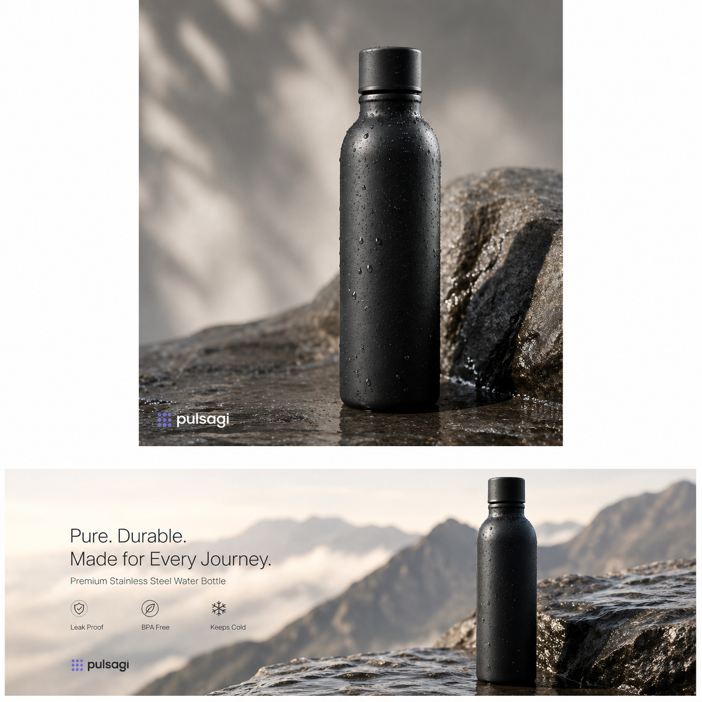
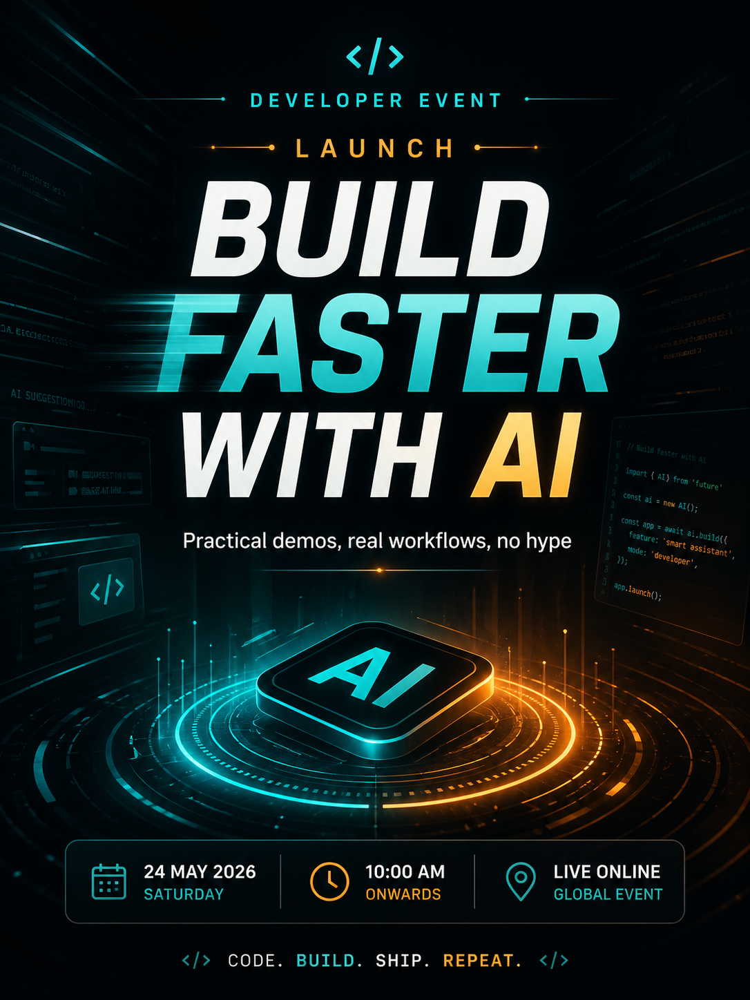
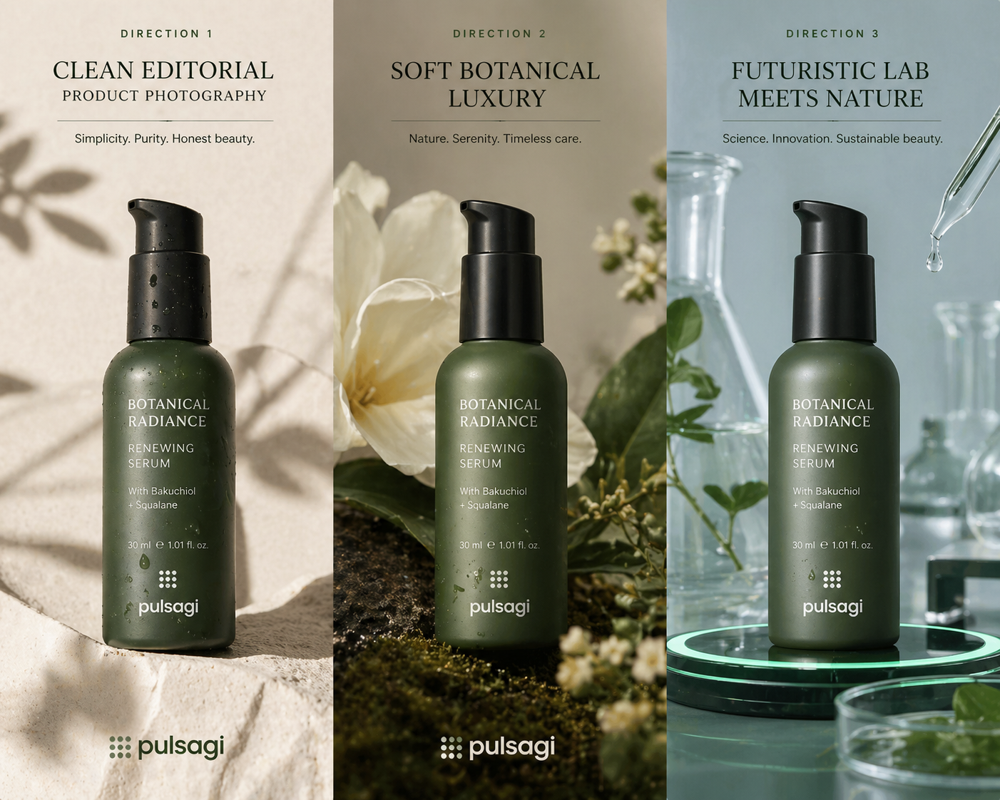

Introduction
An AI image generator is a tool that creates or edits images from text prompts, image references, or both. In practice, that category now covers more than "AI art." Teams use these tools for campaign concepting, social graphics, ad creative, product mockups, posters, storyboards, thumbnails, internal presentations, and image retouching.
This article was reviewed against official product pages and official documentation available on February 8, 2026. The goal is practical guidance, not hype. If you want one short answer, the best overall AI image generator for most users is ChatGPT, but design-led teams may prefer Midjourney, brand and Adobe-heavy teams may prefer Adobe Firefly, and text-on-image work often points to Ideogram. If you are comparing broader categories beyond images, see also the site's best AI tools guide.
What an AI image generator is
At a basic level, an AI image generator takes a prompt such as "create a clean ecommerce product hero shot" and returns image outputs. Better tools do more than that. They offer image editing, reference-based style control, text rendering, composition control, and team-friendly production steps.
| Element | What it means | Why it matters |
|---|---|---|
| Text-to-image | The tool creates an image from a written prompt. | This is the entry point for ideation, concepting, and fast visual exploration. |
| Image editing | The tool changes part or all of an existing image using natural language instructions. | Critical when you need revisions instead of net-new images. |
| Style or reference control | The system uses references, moodboards, or personalization settings to steer aesthetic output. | Important for campaign consistency and brand direction. |
| Text rendering | The model can place legible words inside the final image. | This matters for posters, ads, menus, presentation graphics, and social assets. |
| Workflow integration | The product supports editing suites, APIs, or production pipelines. | Essential for scale, repeatability, and team operations. |
Why AI image generators matter
Visual production is often constrained by time, not just by imagination. Teams lose time on first concepts, variant generation, background changes, social adaptation, and visual localization. AI image generators matter because they compress those loops dramatically.
Faster concepting
Designers and marketers can go from idea to multiple visual directions in minutes instead of days.
More asset variants
One campaign theme can quickly become several layout, style, or aspect-ratio variations.
Better editing leverage
Image edits that once needed heavy manual work can now start from a simple instruction.
Lower creative friction
Non-designers can prototype visuals earlier, which helps teams align before final production.
Business reality: the biggest value is rarely "the AI made a pretty picture." The real value is that teams can move from concept to reviewable visual assets faster, with more options and less repetitive production work.
Key features to look for
If you are comparing AI image generators, these are the features that matter most in real usage.
Prompt following
Good models should respect subject, composition, mood, lighting, and instruction detail instead of drifting into generic output.
Editing quality
Inpainting, replacement, expansion, and natural-language editing matter as much as first-pass generation.
Text rendering
Legible, correctly spelled text is still a major differentiator for posters, ads, and informational graphics.
Style consistency
References, moodboards, personalization, or character consistency controls become critical once work moves beyond one-off experiments.
Commercial and governance fit
Admins should care about licensing posture, workspace controls, data handling, and how the tool fits approved workflows.
API and ecosystem support
Developers should look for APIs, automation paths, and compatibility with design or content systems already in use.
Quick answer: which AI image generator is best for what
If you want the fastest selection guide, start here.
| Tool | Best for | Why it stands out | Watch out for |
|---|---|---|---|
| ChatGPT | Best overall AI image generator for most people and mixed workflows. | OpenAI's current image stack combines strong instruction following, editing, world knowledge, and useful text rendering. | You still need taste, review, and rights checks for production use. |
| Midjourney | Stylized visual concepting, moodboards, and art-direction-heavy creative work. | Its personalization, moodboards, and editor tools make it strong for aesthetic exploration. | It is not the simplest choice when you need business-ready text layouts or office-style production workflows. |
| Adobe Firefly | Commercial design workflows, image editing, and Adobe-centered teams. | Firefly combines text-to-image, Generative Fill, and deeper integration with creative editing workflows. | It fits best when design production matters, not just quick prompting. |
| Ideogram | Text-in-image assets such as posters, menus, covers, and promo graphics. | It remains one of the clearest picks when typography inside the image really matters. | For broader editing and ecosystem workflows, other tools may fit better. |
| Gemini | Google-native users creating visuals inside Gemini, Slides, or Vids. | Official Google support pages show image generation and editing across Gemini Apps and Workspace surfaces. | It is especially compelling if your organization already lives inside Google tools. |
| Leonardo | Creators who want model variety, editing control, and production-friendly refinement steps. | Leonardo emphasizes image generation, Omni editing, upscaling, and multiple model choices in one platform. | It can feel broader and more configurable than casual users need. |
Best AI image generators
The list below is not just "popular AI apps." These are the most useful AI image generator options for distinct image jobs.
ChatGPT
What it is: ChatGPT now covers image generation and editing as part of OpenAI's image product line and API stack, including GPT Image models and conversational image workflows.
Why it matters: OpenAI's official documentation positions GPT Image as strong for instruction following, detailed editing, text rendering, and real-world knowledge. That breadth makes ChatGPT the strongest default starting point for most users who want one capable tool instead of a specialized stack.
Key features
- Strong text-to-image generation.
- Natural-language editing and transformation.
- Useful text rendering inside images.
- Helpful for both concepting and production revisions.
- Developer access through official image APIs.
Best use cases
- Marketing concept images.
- Product visuals and hero graphics.
- Social creatives with controlled copy.
- Storyboard and presentation imagery.
- App workflows that need generation and editing together.
Developer perspective: ChatGPT matters because it is not only a design tool. It is also a programmable image-generation option with official APIs, which makes it practical for internal asset pipelines, creative automation, and app integrations.
Admin perspective: as soon as teams use generated visuals in customer-facing work, admins should define review rules for brand consistency, copyright sensitivity, and which types of assets can be AI-assisted versus fully human-produced.
Limitations: ChatGPT is broad rather than style-specialized. It can still produce inconsistent visual identity between generations if you do not control prompting, references, and review carefully.
Midjourney
What it is: Midjourney is a generative image platform built around creative exploration, with official support for personalization, moodboards, and editing workflows on the web.
Why it matters: Midjourney remains one of the clearest answers when the goal is aesthetic quality, campaign concepting, moodboards, and strong visual taste rather than office productivity.
Key features
- Personalization profiles for aesthetic steering.
- Moodboards built from curated reference images.
- Editor support for remixing, inpainting, pan, and zoom.
- Strong community and exploration surfaces.
- Good fit for art-direction workflows.
Best use cases
- Campaign moodboards.
- Creative direction and visual exploration.
- Story world concept art.
- Fashion, editorial, and brand-style experimentation.
- Teams that need aesthetic range more than rigid business output.
Developer perspective: Midjourney is usually less about engineering integration and more about giving product, creative, and marketing teams a high-quality ideation engine.
Admin perspective: Midjourney needs clear governance if teams use it beyond inspiration, especially for brand consistency, reference handling, and approvals before external publication.
Limitations: Midjourney is not the first tool I would choose for poster text accuracy, business graphics with precise copy, or enterprise-friendly editing workflows embedded in broader production systems.
Adobe Firefly
What it is: Adobe Firefly is Adobe's generative AI platform for images, video, audio, and design workflows, with text-to-image generation and deep editing paths like Generative Fill.
Why it matters: Firefly is one of the most practical answers for brand, creative, and production teams because it combines generation with editing, style controls, and an Adobe-centered operating environment.
Key features
- Text-to-image generation with multiple result variations.
- Image-to-image influence and refinement controls.
- Generative Fill and related Photoshop-style edits.
- Commercial-safety positioning from Adobe.
- Integration with a broader creative workflow stack.
Best use cases
- Marketing asset production.
- Background swaps and scene changes.
- Product-image enhancement and expansion.
- Design teams already working in Adobe tools.
- Creative operations that need editing after generation.
Developer perspective: Adobe matters less for raw API novelty and more for where visuals actually get finalized. If your organization's image workflow ends in Adobe tools, Firefly can reduce handoff friction significantly.
Admin perspective: Firefly is attractive for organizations that care about commercial workflow discipline, especially when legal and brand-review stakeholders are part of the delivery chain.
Limitations: If your main goal is fast pure ideation with a very stylized aesthetic, Midjourney may feel more distinctive. If your main goal is code-first generation, API-first platforms may fit better.
Ideogram
What it is: Ideogram is an image-generation platform with official controls for model selection, render speed, and multiple-image output, and it has built a strong reputation for text handling in generated images.
Why it matters: Many AI image generators still struggle when the image itself must contain accurate, readable words. Ideogram is one of the best specialized options for that problem.
Key features
- Strong text-in-image output quality.
- Multiple model versions and render speeds.
- Generation options suited to iterative design.
- Good for structured promotional graphics.
- Simple output flows for poster-style work.
Best use cases
- Posters and social graphics.
- Book covers and event art.
- Menu mockups and quote cards.
- Typography-heavy ads.
- Branded graphics where spelling matters.
Developer perspective: Ideogram is especially relevant if your application needs promotional or informational images where text must be part of the asset instead of layered separately later.
Admin perspective: Ideogram is easiest to justify when teams have a repeated poster, campaign, or social-graphic use case that clearly benefits from better text rendering.
Limitations: It is not the universal winner for editing depth, enterprise governance, or creative-suite integration.
Gemini
What it is: Gemini can generate and edit images in Gemini Apps, and Google also documents image generation inside Google Slides and Google Vids for eligible plans.
Why it matters: Gemini becomes more valuable when image generation is not an isolated art task but part of a broader document, deck, or Google Workspace process.
Key features
- Image generation directly in Gemini Apps.
- Image editing from uploaded or generated images.
- Workspace integration in Slides and Vids.
- Helpful for presentation and collaboration flows.
- Natural fit for Google-centric teams.
Best use cases
- Presentation visuals.
- Internal comms graphics.
- Workshop decks and explainers.
- Marketing support inside Google workflows.
- Teams that already standardize on Google tools.
Developer perspective: Gemini matters less as a stand-alone art brand and more as an embedded productivity surface for organizations whose collaboration center is already Google Workspace.
Admin perspective: This is often easier to adopt than a separate creative platform because user access, collaboration behavior, and document workflows may already be established.
Limitations: If you want maximum stylistic identity or a design-first editing environment, Gemini may not be the most distinctive option.
Leonardo
What it is: Leonardo positions itself as a creator-first generative AI platform for image generation, editing, upscaling, and multi-model creative workflows.
Why it matters: Leonardo is a good option when users want more configurability, multiple model choices, and production-friendly editing tools in one place instead of relying on a single default generator.
Key features
- Text-to-image and image-to-image creation.
- Omni editing and image guidance workflows.
- Upscaling and refinement tooling.
- Character and style consistency support.
- Multiple model options inside one platform.
Best use cases
- Creative iteration across many styles.
- Game art, concept packs, and campaign variants.
- Teams needing guided editing after generation.
- Creators who want one platform for generate plus refine.
- Workflows that need polish before export.
Developer perspective: Leonardo is useful when teams want access to several model behaviors without building a fully custom stack from scratch.
Admin perspective: Leonardo can fit well where creative experimentation is important but security, workflow stability, and team trust still matter. The platform also highlights SOC 2 accreditation, which is worth noting for enterprise screening.
Limitations: It is stronger when users want to invest a bit more in tooling choice and refinement. For simple day-one usage, ChatGPT or Firefly may be easier defaults.
Many practical examples
The best AI image generator is easier to understand when mapped to real jobs. These examples are written so teams can adapt them directly.
Create a clean product hero image
Create a premium ecommerce hero image for a matte black stainless steel water bottle.
Scene: soft studio lighting, neutral stone surface, subtle water droplets, shallow depth of field.
Style: modern outdoor lifestyle brand.
Output: square composition plus a wide website banner version.
Avoid extra objects and avoid any visible brand logo.

ChatGPT and Firefly are both strong starting points here because the job combines prompt following with commercially useful polish.
Generate a poster with readable headline text
Create a launch poster for a developer event. Headline text inside the image: BUILD FASTER WITH AI Subheading: Practical demos, real workflows, no hype Look: clean dark background, teal and warm amber highlights, futuristic but readable. Keep the typography centered and legible.

This is the kind of prompt where Ideogram often becomes especially valuable because the words inside the image matter as much as the artwork.
Explore three visual directions before design production
Create three campaign concept images for a sustainable skincare brand. Direction 1: clean editorial product photography Direction 2: soft botanical luxury Direction 3: futuristic lab meets natural ingredients Use the same core product silhouette across all three directions.

Midjourney and Leonardo are especially useful when the real goal is not one final output but a range of strong visual directions for review.
Replace a distracting background
Edit this uploaded product photo. Keep the bottle shape, label placement, and reflections intact. Replace the busy office background with a clean warm beige studio backdrop. Add a soft shadow under the product and improve edge clarity.
Firefly, ChatGPT, and Gemini all make sense for this kind of natural-language image editing workflow.
Create a slide illustration for a business narrative
Create a simple presentation graphic showing a customer moving from fragmented tools to one connected AI workflow. Style: minimal, professional, presentation-friendly. Use blue, green, and warm neutral accents. Leave whitespace for slide titles.
Gemini is a strong fit when the visual is being produced for Google Slides or a similar collaboration-first environment.
Use references to keep a consistent look
Using these reference images, create four social visuals for the same campaign. Keep the same color palette, photographic mood, and framing style. Change only the setting: 1. homepage banner 2. Instagram square 3. story format 4. LinkedIn header
Midjourney moodboards, Leonardo guidance tools, and Firefly-style controls are all relevant when consistency matters more than raw novelty.
Generate app artwork through an API-first pattern
Generate a set of four onboarding illustrations for a finance mobile app. Visual system: flat-modern with subtle depth, green and navy palette, accessible contrast. Needed scenes: 1. secure login 2. spending insights 3. smart budgeting 4. goal tracking Return consistent character styling across all four images.
This is where OpenAI image APIs or FLUX-style API workflows matter, because the job is really about repeatable asset generation inside a product pipeline.
Ask for a safer production-ready revision
Review the generated image and improve it for production use. Fix: - awkward hands - inconsistent shadows - any misspelled text - clutter near the focal subject Keep the original composition and overall mood.
A structured second pass is often where image generation becomes genuinely useful for teams instead of staying at novelty-demo level.
Admin and developer perspective
Most image-generator comparisons stop at style quality. That is not enough for real teams. Admins and developers care about operational fit, not only aesthetic output.
| Role | What matters most | Good fit | Practical advice |
|---|---|---|---|
| Business admin / IT admin | Approved tools, rights posture, workspace access, data handling, and review process. | Firefly for creative operations, Gemini for Google-native teams, ChatGPT for broad utility. | Do not evaluate on visual wow-factor alone. Check governance, sharing behavior, and which outputs can legally and operationally be published. |
| Developer / platform engineer | APIs, automation, asset pipelines, consistency, and integration with apps or CMS flows. | ChatGPT image APIs, FLUX and BFL docs, or other programmable stacks. | Treat image generation as a system problem. Prompting is only one part; retries, moderation, storage, naming, and approval also matter. |
| Marketing lead | Campaign throughput, brand fit, variant generation, and shorter review cycles. | Firefly, Midjourney, Ideogram, or Leonardo depending on the campaign format. | Choose based on the type of creative you ship most: poster text, polished edits, moodboards, or repeatable product visuals. |
| Designer / creative ops | Editable outputs, refinement control, style consistency, and handoff quality. | Firefly and Leonardo first; Midjourney for direction; ChatGPT for mixed task support. | The best workflow often combines generation with a real editing layer instead of expecting one prompt to solve everything. |
Best practices
- Start with the job, not the tool: decide whether you need ideation, poster text, editing, presentation graphics, or API automation first.
- Use prompt structure deliberately: subject, composition, mood, lighting, style, aspect ratio, and exclusions usually outperform vague one-line prompts.
- Keep reference images close: references often improve consistency faster than over-explaining style in text.
- Plan a review pass: hands, text, reflections, shadows, and edge details still deserve explicit checking.
- Separate concepting from publishing: the tool that is best for idea generation may not be the best tool for final production edits.
- Document approved use cases: teams should know when AI-generated visuals are allowed, when human design is required, and how legal or brand review works.
- Use multiple aspect ratios intentionally: ask for campaign variants early so social, web, and presentation needs are handled together.
- Think in systems: for team usage, versioning, storage, naming conventions, and approval ownership matter as much as the model.
Limitations
Even the best AI image generator still has real boundaries.
- Image quality is not the same as correctness: a visually impressive output can still contain wrong details, awkward anatomy, or misleading imagery.
- Text rendering is still uneven across tools: some generators are much better than others when words inside the image matter.
- Brand consistency is not automatic: without references, controls, or review, outputs can drift between generations.
- Editing remains important: production work often still needs retouching, layout decisions, or final human design judgment.
- Governance does not happen by magic: admins still need rules for data handling, publishing approvals, and acceptable use.
- Tool leadership can change quickly: image-generation products evolve fast, so "best" depends on the specific date and workflow being evaluated.
Recommendation
If you want one simple recommendation, use ChatGPT as your default AI image generator unless you have a more specialized need.
Choose Midjourney when style exploration and art direction matter most. Choose Adobe Firefly if your real workflow includes editing, production polish, and Adobe-based handoff. Choose Ideogram when readable text inside the image is a core requirement. Choose Gemini if image creation mostly happens inside Google collaboration workflows. Choose Leonardo when you want additional control, model variety, and refinement tools in one platform.
For most organizations, the strongest setup is not one magical image app doing everything. It is a small approved stack with clear ownership: one broad generator, one specialist option for your biggest repeated need, and a review process that protects brand and production quality. Teams pairing visuals with written output should also standardize their companion writing workflow, not just their image workflow.
References
- OpenAI API Docs: Image Generation
- OpenAI: Introducing the Latest Image Generation Model in the API
- OpenAI Help Center: GPT Image API
- Midjourney Docs: Personalization
- Midjourney Docs: Moodboards
- Midjourney Docs: Editor
- Adobe Firefly: Text to Image
- Adobe Photoshop: Generative Fill
- Google Gemini Help: Generate and Edit Images with Gemini Apps
- Google Docs Editors Help: Generate and Edit Images with Gemini in Google Slides and Vids
- Ideogram Docs: Generating Images
- Ideogram Docs: Available Models
- Leonardo AI: AI Image Generator
- Leonardo AI: Model Catalog
- Black Forest Labs Docs